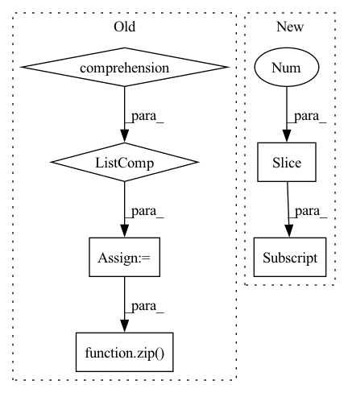

Pattern ID :31489
Before Change
predicts = self.forward(inputs, input_lengths)
predicts = [self.text_process.int2text(sent) for sent in predicts]
targets = [self.text_process.int2text(sent) for sent in targets]
list_wer = torch.tensor(
[self.cal_wer(i, j).item() for i, j in zip( predicts, targets) ]
)
wer = torch.mean(list_wer)
After Change
def validation_step(self, batch: Tensor, batch_idx: int):
inputs, input_lengths, targets, target_lengths = batch
targets_ctc = targets[:, 1:-1]
outputs, output_lengths = self(inputs, input_lengths)
loss = self.criterion(In pattern: SUPERPATTERN
Frequency: 3
Non-data size: 6
Instances Fragment ID: 92126334
Project Name: manhph2211/vistt
Commit Name: 742be9424d91058a3c3e25adc4db742534fffab3
Time: 2022-08-30
Author: manhph5@vingroup.net
File Name: VASR/local/src/engine/trainer.py
M Class Name: ConformerModule
N Class Name: ConformerModule
M Method Name: validation_step(3)
N Method Name: validation_step(3)
M Parent Class: BaseModel
N Parent Class: pl.LightningModule
M File Name: VASR/local/src/engine/trainer.py
N File Name: VASR/local/src/engine/trainer.py
M Start Line: 72
M End Line: 103
N Start Line: 106
N End Line: 126
Before Change
predicts = self.forward(inputs, input_lengths)
predicts = [self.text_process.int2text(sent) for sent in predicts]
targets = [self.text_process.int2text(sent) for sent in targets]
list_wer = torch.tensor(
[self.cal_wer(i, j).item() for i, j in zip( predicts, targets) ]
)
wer = torch.mean(list_wer)
After Change
def test_step(self, batch: Tensor, batch_idx: int):
inputs, input_lengths, targets, target_lengths = batch
targets_ctc = targets[:, 1:-1]
outputs, output_lengths = self(inputs, input_lengths)
loss = self.criterion( Fragment ID: 92126347
Project Name: manhph2211/vistt
Commit Name: 742be9424d91058a3c3e25adc4db742534fffab3
Time: 2022-08-30
Author: manhph5@vingroup.net
File Name: VASR/local/src/engine/trainer.py
M Class Name: ConformerModule
N Class Name: ConformerModule
M Method Name: test_step(3)
N Method Name: test_step(3)
M Parent Class: BaseModel
N Parent Class: pl.LightningModule
M File Name: VASR/local/src/engine/trainer.py
N File Name: VASR/local/src/engine/trainer.py
M Start Line: 105
M End Line: 136
N Start Line: 128
N End Line: 148
Before Change
def foward_infer(self, inputs: Dict[str, Tensor]) -> Tensor:
Forward onnx model.
// we leave only those inputs whose names match with the names from the config.
input_tensors = [input_tensor for input_name, input_tensor in inputs.items() if input_name in self._input_names]
for input, input_tensor in zip( self.__inputs, input_tensors) :
self.__binding.bind_input(
name=input["name"],
device_type=self.device,After Change
output = dict()
for output_params in self.__outputs:
output_tensor = torch.empty((self.batch_dim, *output_params["shape"][1:] ),
dtype=torch.__dict__[output_params["dtype"]],
device=self.device).contiguous()
self.__binding.bind_output( Fragment ID: 92126337
Project Name: eora-ai/torchok
Commit Name: a29d3fd4fe162625512c6d91219a18cae0e8f7ac
Time: 2022-07-29
Author: patr982@gmail.com
File Name: src/tasks/onnx.py
M Class Name: ONNXTask
N Class Name: ONNXTask
M Method Name: foward_infer(2)
N Method Name: foward_infer(2)
M Parent Class: BaseTask
N Parent Class: BaseTask
M File Name: src/tasks/onnx.py
N File Name: src/tasks/onnx.py
M Start Line: 58
M End Line: 72
N Start Line: 59
N End Line: 75